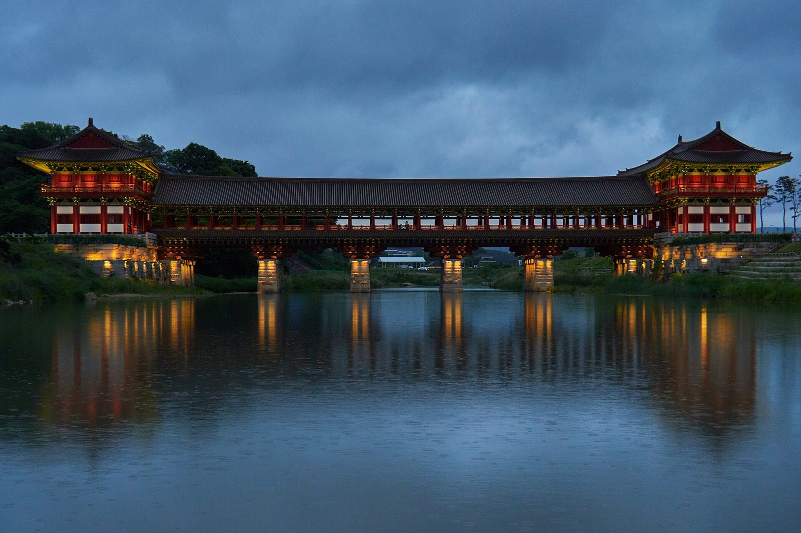

Photo: lumoplank, CC0, via Wikimedia Commons
Woljeonggyo Bridge, Gyeongju: A Scenic Stop, Not a Shopping Mall
Published
At a glance: Woljeonggyo Bridge is a landmark in Gyeongju’s historic Gyo-dong district. It is best known for its architecture and riverside views, especially after dark—not for shopping. Visit for a walk and photos, then explore the surrounding area if you are looking for local souvenirs or other purchases. Google currently lists the attraction at 4.6/5 from 8,895 reviews.
What to expect
Woljeonggyo Bridge is a striking wooden-style bridge over the Namcheon stream, in the historic heart of Gyeongju. Its traditional design makes it a memorable place to pause between visits to the city’s heritage sites. The bridge is attractive in daylight, when you can take in its details and the setting, and it is also a popular evening photo stop when illuminated. Lighting conditions and access can vary, so check current local information if your visit depends on seeing it lit.
For shoppers, the most important point is that the bridge itself is not a marketplace or a shopping complex. You should not plan on browsing stores or buying souvenirs on the bridge. Think of it as a cultural and scenic stop, with the possibility of looking for local businesses in the wider neighborhood as part of the same outing. The nearby Gyochon area is a natural place to continue exploring, but individual businesses, products, and opening arrangements may change.
Shopping around Woljeonggyo
If shopping is a priority, allow time to explore beyond the bridge rather than expecting a dedicated retail experience at the site. As you walk through the surrounding historic district, keep an eye out for businesses that suit your interests, such as local food or gift items. Do not assume a particular shop will be open or that a specific product will be available; check directly before making a special trip to buy something.
This approach works well for visitors who want a more relaxed outing. Enjoy the bridge first, then browse nearby streets at your own pace. You can decide whether the area has the kinds of souvenirs you want instead of building your day around unverified shop listings. If you are looking for a broad choice of retail stores, Woljeonggyo is better treated as one stop on a wider Gyeongju itinerary than as your main shopping destination.
How to make the most of your visit
Give yourself time to see the bridge from more than one angle. A short walk along the stream can offer different views of the structure and its setting, while the bridge itself provides a closer look at its traditional form. For photography, consider visiting in daylight and returning later if you want to see the evening atmosphere; confirm current conditions locally rather than relying on a fixed lighting schedule.
The bridge pairs well with a broader walk through Gyo-dong and the nearby Gyochon Traditional Village area. This combination lets you balance scenery and heritage with a chance to browse local businesses if any are open. Wear comfortable shoes, and be considerate around other visitors, residents, and historic surroundings. If you are carrying shopping bags from elsewhere, keep them secure while walking and taking photographs.
Good to know
- Address: 48 Gyo-dong, Gyeongju, Gyeongsangbuk-do.
- Best for: Architecture, riverside views, photography, and a heritage-area walk.
- Shopping expectations: The bridge is a landmark, not a retail venue. Nearby shopping opportunities can vary.
- Google listing: 4.6/5 based on 8,895 reviews at the time of this article’s verification; ratings and review counts can change.
- Before you go: Check the official Gyeongju information page for current visitor guidance, and confirm details with individual businesses if shopping is central to your plans.
- Visit thoughtfully: Keep pathways clear, follow any posted instructions, and avoid disturbing the historic setting.
Useful links
FAQ
Can I shop on Woljeonggyo Bridge?
No. The bridge is a heritage and sightseeing attraction, not a shopping venue. Explore the surrounding area for local businesses, but check availability before setting out to buy a specific item.
Is Woljeonggyo Bridge worth visiting if I am not shopping?
Yes, if you enjoy traditional architecture, scenic walks, and photography. It works best as part of a wider visit to Gyo-dong rather than as a shopping destination.
Should I visit during the day or in the evening?
Both can offer different views: daytime brings out the bridge’s details, while evening visits are popular for the illuminated scene. Check current local information for access and lighting conditions.